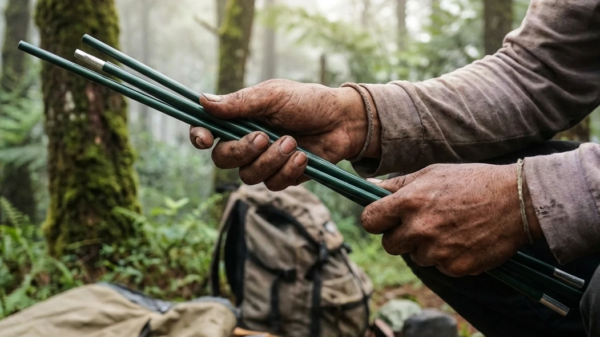

1. Logistik Alam Bebas: Nyawa dari Sebuah Petualangan
Banyak wisatawan pemula yang terbuai oleh indahnya foto-foto alam pegunungan di media sosial, lalu memutuskan untuk berkemah bermodalkan semangat belaka. Mereka seringkali lupa bahwa alam bebas—betapapun memukaunya ia secara visual—tidak pernah berkompromi dengan kelalaian manusia. Ketika Anda memutuskan untuk melangkahkan kaki keluar dari tembok beton peradaban dan memasuki zona alam liar, Anda secara harfiah tengah memindahkan seluruh sistem pendukung kehidupan Anda ke dalam sebuah tas ransel.
Melakukan pencarian dan memahami isi dari Panduan Lengkap Peralatan Camping: Barang Esensial untuk Pengalaman Berkemah yang Otentik bukanlah sekadar himbauan, melainkan prosedur keselamatan mutlak (SOP Safety). Menggunakan peralatan yang salah tidak hanya akan merusak kebahagiaan liburan Anda, tetapi dapat memicu kondisi fatal seperti hipotermia di tengah malam yang membeku. Dalam artikel mahakarya ini, kita akan membedah secara menyeluruh setiap lapis peralatan yang wajib Anda miliki, mulai dari sistem tempat tinggal (shelter), sistem penghangat tidur (sleep system), hingga teknik berpakaian di gunung, agar pengalaman kemah otentik Anda berjalan dengan aman, nyaman, dan meninggalkan memori yang manis.
2. Sistem Tempat Tinggal (Shelter System) yang Tangguh
Tenda adalah benteng utama Anda melawan amukan cuaca. Membeli atau menyewa tenda tidak boleh hanya berdasarkan warna atau harga yang murah.
Kewajiban Menggunakan Tenda Double Layer
Jika Anda berkemah di dataran tinggi atau kawasan pegunungan (seperti di Batu Malang), Anda DIWAJIBKAN menggunakan tenda dome bertipe Double Layer. Apa alasannya? Tenda *single layer* (satu lapis) tidak memiliki rongga pembuang napas. Saat Anda tidur, udara hangat dari tubuh Anda akan menguap ke atas, menabrak langit-langit tenda yang dingin akibat cuaca luar, dan seketika berubah wujud menjadi embun air (proses *kondensasi*). Pada tenda double layer, embun ini akan ditangkap oleh lapisan payung luar (flysheet), sementara bagian dalam (inner) yang berupa jaring udara akan memastikan wajah dan sleeping bag Anda tetap kering kerontang hingga fajar menyingsing.
Pasak dan Tali Pancang (Guy Lines)
Banyak pemula yang malas menancapkan pasak (pegs) dan mengikatkan tali pancang (guy lines) karena merasa tenda sudah berdiri dengan kerangkanya. Ini adalah kesalahan besar! Angin gunung bisa datang secara tiba-tiba dan bertiup sangat kencang. Tali pancang berfungsi untuk mengokohkan struktur rangka tenda agar tidak patah atau terbang tertiup badai. Menarik tali flysheet dengan kencang juga mencegah kain luar menempel pada kain dalam, yang mana persentuhan tersebut bisa menyebabkan air hujan merembes ke area tidur.
BACA JUGA (Tips Logistik Lainnya):
3. Sistem Tidur (Sleep System) Penghalau Hawa Beku
Membawa jaket setebal apa pun akan percuma jika Anda gagal meracik Sleep System yang benar di atas lantai tenda Anda.
Matras Foil dan Matras Spons (Isolator Tanah)
Hukum fisika dasar di alam bebas: tanah akan selalu berusaha menyedot suhu panas dari tubuh Anda (konduksi). Jangan pernah tidur langsung bersentuhan dengan karpet dasar tenda. Anda harus membangun insulasi. Lapisan paling dasar wajib menggunakan matras aluminium foil; sisi mengkilapnya akan memantulkan suhu dingin dari tanah kembali ke bawah. Setelah itu, barulah tumpuk dengan matras spons (foam mat) atau kasur tiup udara (sleeping pad) untuk memberikan efek empuk pada tulang punggung Anda.
Sleeping Bag Tipe Mummy Berbahan Polar
Tinggalkan selimut rumah Anda yang mudah ditembus angin. Anda membutuhkan Sleeping Bag (kantong tidur) khusus gunung. Pilihlah tipe Mummy (mengerucut di bagian ujung kaki) untuk meminimalisir ruang kosong berlebih di dalam kantong yang bisa membuat udara dingin terperangkap. Perhatikan juga material pelapis dalamnya (inner lining); bahan kain polar atau dacron sintetik adalah pilihan standar terbaik yang mampu mengunci radiasi panas tubuh Anda dengan sangat maksimal sepanjang malam.
4. Sistem Pakaian (Layering System) untuk Keselamatan
Di alam terbuka, pakaian Anda bukan sekadar atribut fashion atau estetika foto, melainkan perlengkapan penunjang kehidupan (life support).
Lapis Dasar (Base) dan Lapis Tengah (Mid Layer)
Pakaian harus diterapkan dengan prinsip 3-Layering System. Lapisan pertama yang menempel di kulit (base layer) DILARANG KERAS menggunakan bahan katun karena katun mengikat air. Gunakan bahan dry-fit atau wol merino yang menyerap lalu segera menguapkan keringat Anda. Lapisan kedua (mid layer) adalah lapis insulasi; Anda bisa mengenakan jaket rajut tebal, *sweater* dari bahan fleece (polar), atau jaket bulu angsa (down jacket) untuk memerangkap hawa hangat di sekitar dada Anda.
Lapis Terluar (Outer Layer) Penahan Angin
Sekalipun dada Anda hangat, hawa panas tersebut akan seketika tersapu habis oleh hempasan angin gunung jika Anda tidak memakai cangkang luar (outer layer). Gunakan jaket bertipe Windbreaker (penahan angin) dari bahan parasut, atau lebih baik lagi tipe Hardshell yang memiliki kemampuan tahan air (waterproof) untuk melindungi diri dari terpaan embun malam yang basah. Lengkapi pertahanan Anda dengan melindungi ekstremitas menggunakan kupluk (beanie hat), sarung tangan, dan kaus kaki tebal ganda.

Mempelajari dan mempraktekkan cara mendirikan kerangka tenda dome secara mandiri adalah keahlian (skill) dasar yang wajib dikuasai oleh setiap penggiat aktivitas alam bebas.5. Sistem Dapur Lapangan (Camp Cooking Gear)
Tubuh manusia adalah mesin yang membutuhkan bahan bakar. Di tengah suhu yang ekstrem, tubuh Anda membutuhkan kalori ekstra untuk dibakar menjadi energi panas (metabolisme).
Kompor Portabel, Windshield, dan Nesting
Bawalah kompor gas portabel tipe lipat yang sangat ringkas, beserta tabung gas kaleng (sering disebut gas hi-cook). Karena Anda memasak di udara terbuka, keberadaan windshield (lempengan aluminium penghadang angin) sangatlah vital agar api kompor Anda tidak padam atau kehilangan daya panasnya. Untuk wadah memasaknya, gunakan panci bersusun aluminium khusus gunung (nesting) yang tutupnya juga bisa difungsikan sebagai wajan penggorengan.
Penyediaan Air dan Makanan Padat Kalori
Pastikan stok air bersih (air mineral) Anda melimpah, baik untuk diminum maupun untuk kebutuhan memasak. Untuk logistik makanan, selain mie instan, bawalah bahan yang padat kalori namun ringkas seperti telur, sosis ayam, kornet sapi, oat, dan madu sachet. Menyeduh segelas kopi hitam, jahe merah, atau teh manis panas di depan tenda bukan hanya sekadar untuk aesthetic, melainkan cara tercepat untuk mencegah suhu tubuh merosot tajam (hipotermia).
6. Perlengkapan Navigasi, Penerangan, dan Darurat
Alam liar tidak memiliki lampu penerangan jalan umum. Persiapan darurat adalah pembeda antara petualang yang cerdas dan yang sembrono.
Penerangan Headlamp dan Senter Tenda
Lampu sorot dari *flash smartphone* Anda tidak akan cukup dan akan menguras baterai dengan cepat. Bawalah Headlamp (senter kepala) agar kedua tangan Anda tetap bebas bergerak saat harus buang air di malam hari atau saat meracik masakan. Sediakan pula lampu tenda (tent lantern) yang bisa digantung di langit-langit dalam untuk menerangi ruang aktivitas Anda beristirahat.
Kotak P3K Pribadi (First Aid Kit)
Sediakan kotak obat darurat kecil yang anti air. Isilah dengan obat penurun demam (paracetamol), obat anti diare/sakit perut, obat anti mabuk perjalanan, minyak kayu putih untuk menghangatkan dada, obat luka merah (povidone iodine), perban/plester elastis, dan obat-obatan spesifik jika Anda memiliki riwayat alergi atau asma. Bawa juga trash bag (kantong kresek hitam) dalam jumlah banyak untuk mengumpulkan seluruh sampah Anda agar sesuai dengan prinsip Leave No Trace.
BACA JUGA (Opsi Kemah Praktis):
7. Mengapa Memilih Peralatan yang Tepat Sangat Krusial?
Seringkali, wisatawan mengutamakan estetika visual demi konten media sosial (membawa selimut berumbai atau keranjang piknik bambu yang berat) namun melupakan fungsi dasar keamanan. Di alam bebas, fungsi (utility) harus selalu diletakkan jauh di atas estetika (aesthetic). Peralatan yang salah tidak hanya akan menyiksa fisik—seperti ransel yang membuat pundak lecet atau jaket yang tidak menahan dingin—tetapi juga akan merusak suasana hati (mood) seluruh anggota tim. Dengan mengikuti pakem logistik yang telah dijabarkan di atas, Anda memastikan bahwa fokus Anda saat berlibur adalah benar-benar menikmati keindahan semesta, bukan berjuang menahan penderitaan.
8. Kesimpulan
Merencanakan pelarian (healing) ke alam terbuka adalah tentang persiapan mental dan material. Lewat rincian pada Panduan Lengkap Peralatan Camping: Barang Esensial untuk Pengalaman Berkemah yang Otentik ini, kita belajar bahwa berkemah yang sukses adalah hasil dari manajemen logistik yang cerdas. Menyiapkan tenda double layer yang kokoh, meracik susunan sleep system yang mengisolasi suhu tanah, serta memakai pakaian dengan formula 3-Layering adalah hukum gravitasi di alam liar yang tak bisa Anda bantah. Jika Anda merasa enggan untuk menginvestasikan jutaan rupiah untuk membeli semua alat tersebut, Anda selalu bisa memanfaatkan layanan operator profesional (seperti Batu Sunrise Camp) yang menyediakan opsi Comfort Camping—di mana seluruh alat esensial ini disewakan dalam keadaan siap pakai. Apapun jalan yang Anda tempuh, persiapkanlah gear Anda dengan bijak, hormati kelestarian alam dengan tidak meninggalkan sampah, dan sambutlah kedamaian sejati yang ditawarkan oleh sejuknya angin pegunungan.